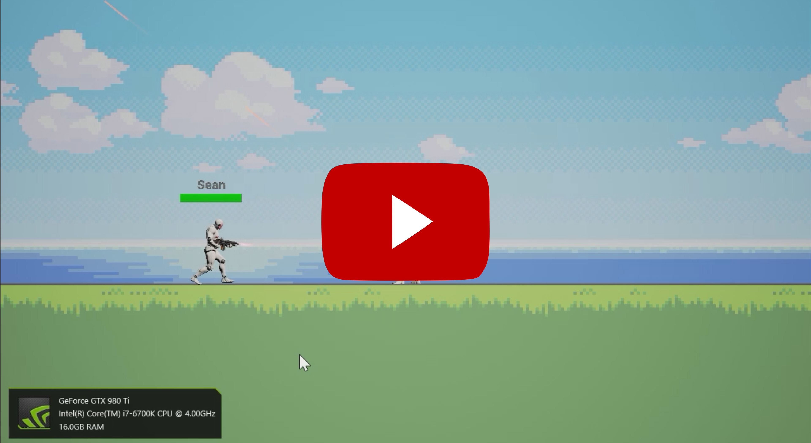
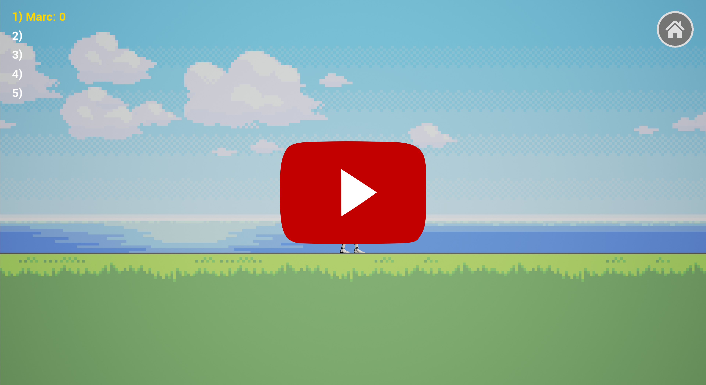

Twitcher
Twitcher is 3D/2D multiplayer shooter where players can go play against each other to become the best!
Background
This project was created as a result of learning SCRUM as a software development methodology. The game is built on the Unreal Engine 4 using blueprint, and intended for use on Windows PC's and Android smart phones.
Videos
Multiplayer Test: 
Map & Weapon Changing: 
Downloads
Sorry but Twitcher is no longer supported and will no longer contiune to be publicly hosted.
References
Epic Games. (2016). Unreal Engine 4. [online] Available at: https://www.unrealengine.com/what-is-unreal-engine-4 [Accessed 20 March. 2016].